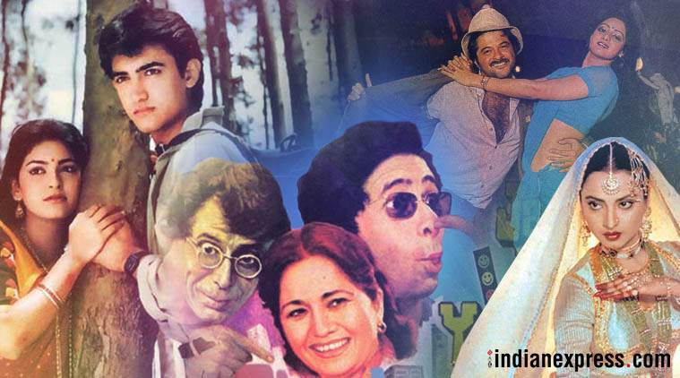
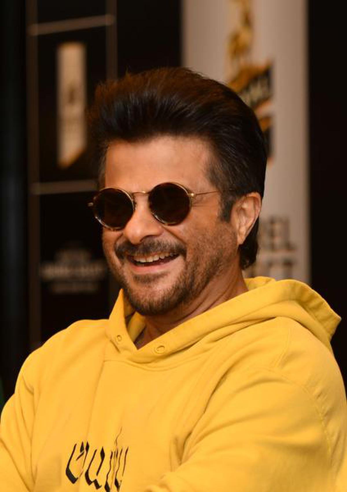

About Bollywood
Hindi cinema, often known as Bollywood and formerly as Bombay cinema, is the Indian Hindi- language film industry based in Mumbai. The term is a portmanteau of "Bombay" and "Hollywood". The industry is related to Cinema of South India and other Indian film industries, making up Indian Cinema—the world's largest by number of feature films produced.
Nostalgia: Classic Bollywood (1980s)
Categories
- Actresses
- Madhuri Dixit
- Sridevi
- Dimple Kapadia
- Amrita Singh
- Smita Patil
- Meenakshi Sheshadri
- Jaya Prada
- Rati Agnihotri
- Neelam Kothari
- Padmini Kolhapure
- Actors
- Anil Kapoor
- Sanjay Dutt
- Sunny Deol
- Naseeruddin Shah
- Mithun Chakraborty
- Jackie Shroff
- Amrish Puri
- Anupam Kher
- Om Puri
- Shakti Kapoor
- Sensational Actors/Actresses
- Amitabh Bachchan
- Madhuri Dixit
- Rajesh Khanna
- Sridevi
- Anil Kapoor
- Hema Malini
- Best Cast


Help us to serve you better!
Enter your full name:
Select your gender:
Male
Female
Other
Prefer not to say
How old are you?
How much do you like watching movies?
How often do you watch movies?
In general, how much do you like movies that were released in the '80s?
Really dislike
Dislike
Neither like nor dislike
Like
Really like
Select your favorite genre:
Would you recommend our work to others?
Yes
No
Please enter your feedback (Optional):
Related:

Top 30 Iconic Films of Bollywood

Iconic Heroes of Bollywood

Gangs of Bollywood

Popular Villains of Bollywood

Bollywood 80s: Mix of action and romance
1980s in Bollywood: The decade offered a dizzying array of cinematic delights
The 1980s didn’t really suck, as it has been made out to be. There’s no doubt that the decade offered a dizzying array of cinematic delights. Umrao Jaan, Ardh Satya, Khubsoorat, Arth, Jaane Bhi Do Yaaro and Mr India are among the kaleidoscopic treats that the Eighties gave us.
Most critics generally brush off the 1980s as a “low point” in Hindi cinema and the “lowest”, they demurred, was about to follow – the dreadful 1990s. Was this period, then, a veritable decline for Bollywood? Did the 1980s have nothing worth celebrating? Well, there was plenty to begin with. You merely have to look at the sheer versatility and variety of cinema on display in that decade to know that 1980s is just as important as any other. It’s a decade in which a period spectacle like Umrao Jaan rubbed shoulder with the madcap Jaane Bhi Do Yaaro and Govind Nihalani-Om Puri’s breakthrough Ardh Satya, considered a treasure of the art-house circuit while Mahesh Bhatt’s sensitive Arth shared sibling love with the seriously entertaining Mr India and Vidhu Vinod Chopra’s essential gangster best-seller, Parinda.
Musically, the Laxmikant-Pyarelal and RD Burman-era 1980s anticipated the Nadeem Shravan-infused saccharine melody of the 1990s. (Gulzar did some of his finest works in the 1980s, ending the decade with Ijaazat and Libaas). You could feel romance in the air, with the star-crossed love stories introducing two young men who have had a riveting hold on the audiences in wildly different ways. Ek Duuje Ke Liye, Kamal Haasan’s Hindi debut, Romeo-Julietified the trend for shock endings. Aamir Khan and Juhi Chawla’s breakout Qayamat Se Qayamat Tak followed the same path. Music was the soul of both films. Music was also at the heart of the success of Karz, with Rishi Kapoor flexing his rockstar-dom and so, one must say, Umrao Jaan whose mujras (performed with grace by Rekha), poetry (director Muzaffar Ali’s favourite Shahryar at work) and Khayyam’s immortal compositions are a throwback to 1950s classicism.
So, is 1980s really all that bad? Indeed, it had its misses and misfortunes, but overall, the decade saw an excellent mix of meaningful and commercially-minded hits that has inspired as many viewers to think as much as it has entertained. In the fourth of our on-going essay series called ‘Hindi classics that defined the decade,’ we look back at the 1980s Bollywood hits.
Top 5 Bollywood Actors in '80s
Honorable Mentions: Raj Babbar, Kader Khan, Pankaj Kapur, Farooq Shaikh, Suresh Oberoi, Saeed Jaffery, Danny Denzongpa, Kulbhushan Kharbanda, Sunny Deol, Mithun Chakraborty, Jackie Shroff, Om Puri, Shakti Kapoor
Anil Kapoor | Slumdog Millionaire
Living in a Chawl in Tilak Nagar, Punjabi-speaking Anil was born in 1959 to Surinder and Nirmal aka Suchitra Kapoor. He has an elder brother, Boney, a sister, Reena, and a younger brother, Sanjay. His dad used to be Shammi Kapoor's Secretary...
Sanjay Dutt | Munna Bhai M.B.B.S.
Sanjay Dutt, son of Nargis and Sunil Dutt, was first featured in Rocky (1981), the movie was a box office hit.
Sanjay's personal life was exacerbated by drug problems, and he later lost his wife Richa Sharma, to cancer. He was also arrested for having illegal weapons, and was imprisoned...

Naseeruddin Shah | A Wednesday
Naseeruddin Shah was born on July 20, 1950 in Barabanki, Uttar Pradesh, India. He is known for his work on A Wednesday (2008), The League of Extraordinary Gentlemen (2003) and Iqbal (2005). He has been married to Ratna Pathak Shah since April 1, 1982. They have three children.

Amrish Puri | Indiana Jones and the Temple of Doom
Believe it or not, Amrish Puri wanted to become a Bollywood movie hero but failed a screen test in 1954. And what a failure it was! Mr. Puri went on to become one of the most renowned and credible villains in the history of Indian cinema. His most memorable and often quoted role is the character of Mogambo...

Anupam Kher | Silver Linings Playbook
Anupam Kher was born on March 7, 1955 in Shimla, Himachal Pradesh, India. He is an actor and producer, known for Silver Linings Playbook (2012), A Wednesday (2008) and M.S. Dhoni: The Untold Story (2016). He has been married to Kiron Kher since August 25, 1985. They have one child...
Heroines who ruled a million hearts in the '80s
Honorable Mentions: Sarika, Mandakini, Tina Munim, Deepti Naval, Kaajal Kiran, Yogeeta Bali, Poonam Dhillon, Ranjeeta Kaur, Smita Patil, Jaya Prada, Rati Agnihotri, Neelam Kothari, Padmini Kolhapure

Madhuri Dixit | Devdas
Madhuri Dixit is one of the most acclaimed actors and Kathak dancers Bollywood have ever witnessed. Born in a Marathi Brahmin Koknastha family to Mr. Shankar and Mrs. Snehlata, Madhuri Dixit has two sisters Rupa, Bharti, and brother Ajit...

Sridevi | English Vinglish
Sridevi was born on August 13, 1963 in her father's hometown of Sivakasi, Tamil Nadu, India. Her mother was from Tirupati, Andhra Pradesh. So Sridevi grew up speaking Telugu and Tamil. She has a sister named Srilatha and a stepbrother named Satish. Her dad passed away during the year 1991...

Dimple Kapadia | Tenet
Born in a Gujerati-speaking family on June 8, 1957, daughter to businessman, Chunnibhai and Betty, Dimple has a younger sister, Simple, who was born on 15 August 1958.
She was discovered by Raj Kapoor, who signed her up opposite his son, Rishi, in the 1973 hit 'Bobby'...

Amrita Singh | Badla
Aquarian Amrita was born on February 9, 1958. Her parentage is Sikh-Muslim. Her dad's name is Shivinder Singh, and her mom's maiden name was Rukshana Sultana. She is the great-grand daughter of Shobha Singh, who knighted and had his prefixed by 'Sir'. She is the niece of writer/author Khushwant Singh...

Meenakshi Sheshadri | Jurm
Meenakshi Sheshadri (born on November 16th 1963) is an Indian (Bollywood) film actress and dancer who acted in more than 20 Bollywood films during her times. She won the Miss India contest in 1981 at age 17, nominated as the youngest woman to be crowned Miss India...
'80s Hits

Ram Teri Ganga Maili (1985)
Director: Raj Kappor
Cast: Rajiv Kapoor, Mandakini

Naam (1986)
Director: Mahesh Bhatt
Cast: Nutan, Sanjay Dutt, Kumar Gaurav, Amrita Singh, Poonam Dhillon, Paresh Rawal

Nagina (1986)
Director: Harmesh Malhotra
Cast: Sridevi, Rishi Kapoor, Amrish Puri, Prem Chopra

Karma (1986)
Director: Subhash Ghai
Cast: Dilip Kumar, Nutan Behl, Anil Kapoor, Jackie Shroff, Sridevi, Naseeruddin Shah, Poonam Dhillon

Khudgarz (1987)
Director: Rakesh Roshan
Cast: Jeetendra, Shatrughan Sinha, Bhanupriya, Amrita Singh, Govinda, Neelam

Mr. India (1987)
Director: Shekhar Kapur
Cast: Anil Kapoor, Sridevi, Amrish Puri

Namak Halaal (1982)
Director: Prakash Mehra
Cast: Amitabh Bachchan, Shashi Kapoor, Smita Patil, Parveen Babi

Hero (1983)
Director: Subhash Ghai
Cast: Jackie Shroff, Meenakshi Sheshadri, Sanjeev Kumar

Tezaab (1988)
Director: N. Chandra
Cast: Anil Kapoor, Madhuri Dixit, Chunkey Pandey

Chandni (1989)
Director: Yash Chopra
Cast: Sridevi, Rishi Kapoor, Vinod Khanna

Tridev (1989)
Director: Rajiv Rai
Cast: Naseeruddin Shah, Sunny Deol, Jackie Shroff, Madhuri Dixit, Sonam, Sangeeta Bijlani

Ram Lakhan (1989)
Director: Subhash Ghai
Cast: Anil Kapoor, Jackie Shroff, Madhuri Dixit, Dimple Kapadia, Rakhee

Dostana (1980)
Director: Raj Khosla
Cast: Amitabh Bachchan, Shatrughan Sinha, Zeenat Aman

Qayamat Se Qayamat Tak (1988)
Director: Mansoor Khan
Cast: Aamir Khan, Juhi Chawla

Maqsad (1984)
Director: K. Bapaiah
Cast: Rajesh Khanna, Jeetendra, Sridevi, Jaya Prada